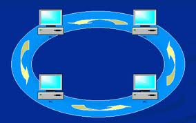
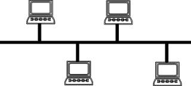
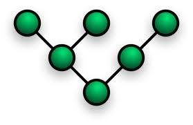

| NOME |
IMG |
DESCRIZIONE |
VANTAGGI E SVANTAGGI |
| rete punto a punto |
 |
una rete punto a punto è realizzata unendo ogni device della rete con un cavo |
Vantaggi
1) Ogni nodo può parlare direttamente con tutti gli altri--
2) è una rete molto veloce
Svantaggi
1) il costo della rete è molto alto -
2) sono necessare dei device speciali cioè con tante schede di rete |
| Rete a stella |
 |
Una rete a stella funziona collegando tutti i device a un punto centrale.Questo nodo centrale può essere un computer speciale o un HUB o uno switch |
VANTAGGI
1) è una rete semplice da realizzare --
2) è molto economica
Svantaggi
1) Nel caso si rompa il nodo centrale la rete non funziona più
2) tutte le comunicazioni passano nel nodo centrale che se non è ben programmato lascia vedere i dati agli altri nodi
|
| Anello |

| la rete ad anello prevede che ogni nodo sia collegato ad altri due
| Vantaggi
1) è una rete semplice--
2) una rete semplice da espandere
Svantaggi
1) la rottura di un nodo blocca tutta la comunicazione
2) per parlare tra i nodi (a e b) potrebbe essere necessario passare per tutti gli altri nodi della rete
|
| bus |

| Tutti i nodi sono collegati tra di loro per mezzo di un bus, cioè un canale che possiede due estremità e n accessi ad esso. Le due estremità sono chiuse con dei terminatori. |
VANTAGGI
1) è semplice da usare
2) è economica
SVANTAGGI
1) la rottura di un terminatore può bloccare la rete
2) la rottura di un bus blocca tutta al comunicazione |
| Albero |

| è una rete in cui sono definite delle gerarchie cioè un nodo può essere padre di un' altro nodo. Ogni nodo è collegato ad un' altro nodo che può vedere pezzi di reti maggiori |
VANTAGGI
1) è adatta a gestire piccoli gruppi che devono condividere risorse
2)la rottura di un nodo consente ad altri pezzi di rete di funzionare
SVANTAGGI
1) è una rete complicata da realizzare e mantenere
2) l' aggiunta di un nodo può richiedere configurazioni complesse |